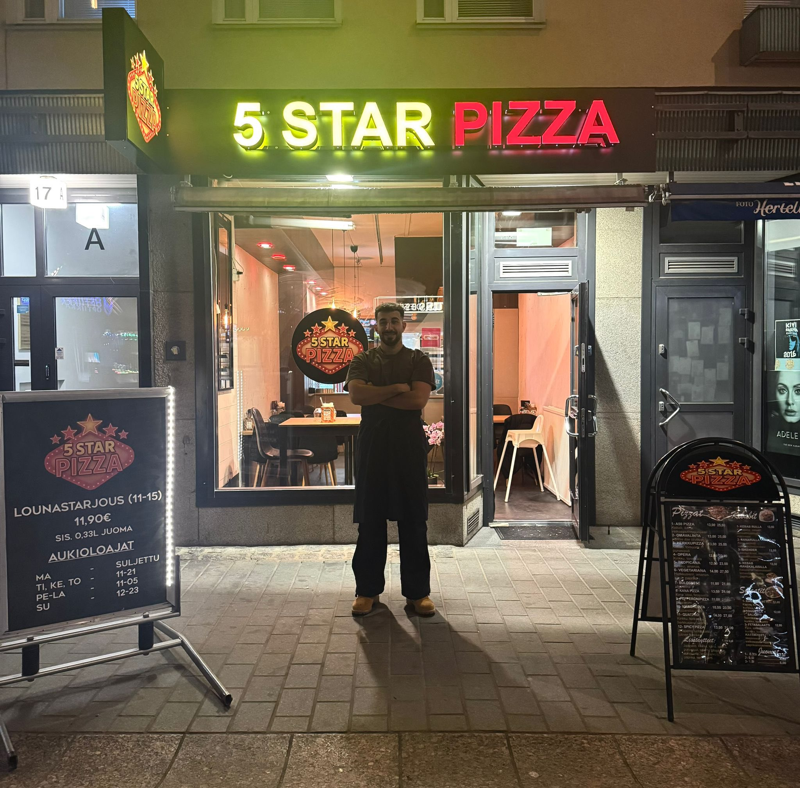

041 5823111

⭐⭐⭐⭐⭐
"Paras pizza kaupungissa! Pohja on täydellisen rapea ja täytteet aina tuoreita. Erityisesti Margherita oli huippu!"
– Laura K.
⭐⭐⭐⭐☆
"Nopea palvelu ja ystävällinen henkilökunta. Tilasin kebab-pizzan ja se oli todella maukas. Tulen varmasti uudestaan."
– Mikko T.
⭐⭐⭐⭐⭐
"Tunnelmallinen paikka ja loistava valikoima. Myös gluteeniton pizza oli erinomainen!"
– Sara L.
Tampereen paras pizza!
Meidän pizzeriassa tärkeintä on hyvä maku ja rento tunnelma. Pizzat valmistetaan tuoreista raaka-aineista ja taikina tehdään paikan päällä joka päivä. Valikoimasta löytyy klassikot sekä muutama oma suosikki, ja annokset ovat reiluja niin kuin pitääkin. Täällä ei hienostella turhaan – tarjolla on rehellistä, maukasta pizzaa ja ystävällistä palvelua. Tervetuloa syömään paikan päälle tai hakemaan mukaan!

Aukioloajat
Ma-Suljettu
Ti-To 11-21
Pe-Su 11-5
Tuomiokirkonkatu 17, 33100 Tampere
041 5823111